Workshop Manual ➭ DRIVELINE/AXLE ➭ DRIVE SHAFT ➭ REAR DRIVE SHAFT DISASSEMBLY/ASSEMBLY
REAR DRIVE SHAFT DISASSEMBLY/ASSEMBLY
id031300800700
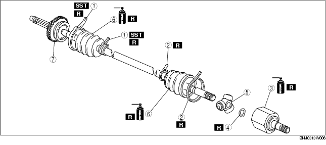
|
Boot band (axle side) (See Boot Band (Axle Side) Disassembly Note.) (See Boot Band (Axle Side) Assembly Note.) |
|
|---|---|
|
Boot band (differential side) (See Boot Band (Differential Side) Disassembly Note.) (See Boot Band (Differential Side) Assembly Note.) |
|
|
Tripod joint socket (See Tripod Joint Socket Disassembly Note.) (See Tripod Joint Socket Assembly Note.) |
|
|
Snap ring (See Snap Ring, Tripod Joint Disassembly Note.) (See Tripod Joint, Snap Ring Assembly Note.) |
|
|
Tripod joint (See Snap Ring, Tripod Joint Disassembly Note.) (See Tripod Joint, Snap Ring Assembly Note.) |
|
|
Boot (See Boot Disassembly Note.) (See Boot Assembly Note.) |
|
Boot Band (Axle Side) Disassembly Note
• Remove the boot band only if there is an abnormality.
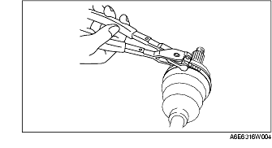
Boot Band (Differential Side) Disassembly Note
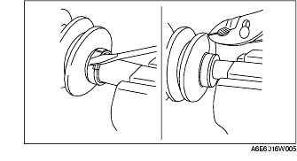
Tripod Joint Socket Disassembly Note
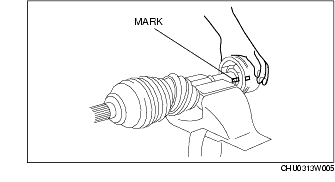
Snap Ring, Tripod Joint Disassembly Note
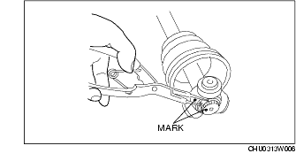
• To prevent damage to the component, do not use a hammer when removing it.
Boot Disassembly Note
• Remove the axle side boot only if there is an abnormality.
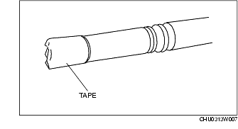
Boot Assembly Note
• The boot shapes on the axle side and the differential side are different so do not miss install them.
• Do not touch the grease with your hand. Apply it from the tube to prevent foreign matter from entering the boot.
Grease amount90-110 g {3.18-3.88 oz}
Tripod Joint, Snap Ring Assembly Note
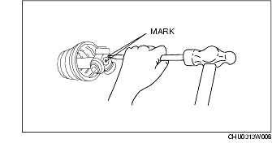
• To prevent damage to the component, do not tap the roller part when installing.
Tripod Joint Socket Assembly Note
• Do not touch the grease with your hand. Apply it from the tube to prevent foreign matter from entering the boot.
Grease amount135-155 g {4.77-5.46 oz}
-
Release any trapped air from the boots by carefully lifting up the small end of each boot with a cloth wrapped screwdriver.
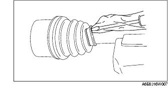
• Do not let the grease leak. • Do not damage the boot.
- Set the drive shaft length to the specification when the inside of the boots is at ambient pressure.
Rear drive shaft standard lengthLeft side: 778.5-788.5 mm {30.65-31.04 in}Right side: 818.5-828.5 mm {32.22-32.62 in}
Boot Band (Differential Side) Assembly Note
- Using pliers, pull the boot band around the boot slot in opposite direction of drive shaft forward rotation direction and tighten.
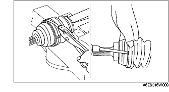
-
Insert the end of the boot band between the boot band clip and fold back the clip tabs using a flathead screwdriver to secure the boot band.
-
Verify that the boot band is installed to the boot slot securely.
Boot Band (Axle Side) Assembly Note
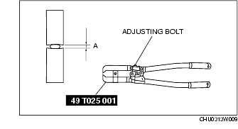
Specification A2.9 mm {0.11 in}
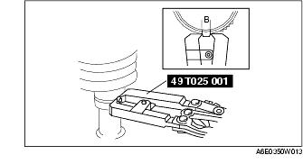
• If the crimp value B exceeds the specification, reduce opening length A of the SST and recrimp the boot band. • If the crimp value B is less than the specification, increase opening length A of the SST and crimp the new boot band.
Specification B2.4-2.8 mm {0.095-0.110 in}
• If the boot band protrudes from the installation area, replace it with a new band and repeat Step 2-4.
Specification A3.2 mm {0.13 in}
• If crimp value B exceeds the specification, reduce opening length A of the SST and recrimp the boot band. • If the crimp value B is less than the specification, replace the boot band, increase opening length A of the SST, and then recrimp the new boot band.
Specification B2.4-2.8 mm {0.095-0.110 in}
• If the boot band protrudes from the installation area, replace it with a new band and repeat Step 7-9.